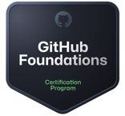
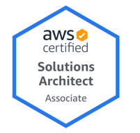
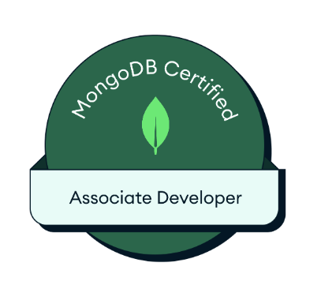

Jaikrat Singh Tariyal
Solution Architect
Phone number: +44-7776800903
E-mail: jaikrat.singh@gmail.com
Experience Summary
- More than 16 years of experience in Software Development, Design, and DevOps experience with proficiency in multiple programming Frameworks, MicroServices, Distributed Application Architectures, Agile Methodologies, Version Control Systems, Cloud Platforms, Continuous Integration/Continuous Deployment (CI/CD) pipelines, and strong problem-solving skills.
- Currently associated with Wipro as Solution Architect since 2019,
- Proven track record of successfully architecting and implementing scalable, secure, and high-performance software systems for banking applications
- Knowledge of banking regulations, compliance, and security standards e.g. PCI
- Strong understanding of banking processes, workflows, and business requirements
- Proficient in Java, Spring Framework, Solution and API Designing, CI/CD, and other DevOps techs
- Excellent problem-solving, analytical, and communication skills, with a demonstrated ability to collaborate effectively with cross-functional teams and stakeholders
- Experience in working in fast fast-paced dynamic work environment
- Extensively engaged in Change The Bank initiatives within various organizations
- SME of API Architect activities in Unsecured Lending Value Stream with the current client.
RESUME
Professional Achievements
- Contributed to the Solution Design of HSBC’s Buy Now, Pay Later (BNPL) product for new customers.
- Contributed to the design of Microservice Solutions to streamline the M&S Cards onboarding process for new customers.
- Implemented an Online Bill Payment System in HSBC India, enabling HSBC customers to make real-time online bill payments using their Net Banking facility.
- Integrated one of the Payment Gateway with HSBC India, enabling customers to use their account for online features like Shopping, Ticket Booking etc.
- UPI Integration with HSBC India Mobile App enabling customer to instant payment using their mobile
Awards
- Extra Miler Award, Wipro(Oct-2024): To recognize the significant impact on business objectives in a collective recognition forum.
- Extra Mile Award, Wipro(Aug-2024): To recognize the significant impact on business objectives in a collective recognition forum.
- BU Level Award, Wipro(2020) : Business Value Creator, Awarded to an individual or team for the business value creator to Wipro and the end customer.
- Surpass Award (Nomination), Synechron(2015): This award is given to an employee for his/her consistent performance during a specific quarter. Significant overall contribution to the project and being a critical factor that has helped to improve employee performance within the team. Demonstration of excellence and quality in work.
- Spot Award, Synechron(2014): Reward given to an employee at the spur of the moment for his/her exceptional contribution beyond their primary tasks and responsibilities.
- On the Spot Award, HSBC(2010): The award is given within a team on a quarterly basis for extraordinary work done by a member of a team by putting in some additional effort.
- Recognition of Individual’s Superior Efforts (RISE) Award, HSBC(2009): Award given for those who display commitment/additional effort/stretch in completing an assignment or series of assignments in a quarter (completing milestone for a long-term assignment).
Certification
- AWS Solution Architect (Associate) - 2021
- MongoDB Certified Associate Developer - 2023
- GITHUB Foundation - 2024
Skills Set
Technical
- Skills: Programming(Java), Unit Testing and Debugging, MicroServices Designing and Development, UML, Modelling, Problem Solving and Decision Making, API Migration
- Frameworks: AXON(CQRS), Spring, SpringBoot, JSF, JQuery, JUNIT, WireMock, RESTAssured4, RAML(0.8, 1.0), Swagger 2.0,3.0 (OAS), MongoDB, KONG, DOCKER, Kubernetes, Cloud Technologies(AWS(EKS), GCP(GKE)), Containerization Virtualization, SOAP and REST, DDD, TDD, Event-Driven, Security(SSO, SAML, OAuth2.0), Kafka, Service Mesh Integration, Encryption Technologies, Distributed Tracing.
- Databases: Relational Databases(MySQL, Oracle, SQL Server), NoSQL Databases (MongoDB)
Functional
- System Integration: Expertise in integrating various banking systems, such as core banking systems, payment gateways, and third-party APIs, to ensure seamless data flow and interoperability.
- System Architecture: Ability to design and architect end-to-end solutions for banking applications, including defining system components, interfaces, and integration patterns to meet business requirements and optimize performance.
- Security and Fraud Prevention: Proficiency in designing secure software architectures, implementing authentication and authorization mechanisms, and incorporating fraud prevention measures to protect sensitive financial data and mitigate security threats.
- Core Banking Systems: Familiarity with core banking systems,
- Financial Products and Services: Understanding of various financial products and services offered by banks, such as retail banking, commercial banking, wealth management, and investment banking, to architect tailored solutions for specific business domains.
- Scalability and Performance Optimization: Experience in designing scalable and high-performance architectures that can handle large volumes of transactions and users, while optimizing resource utilization and minimizing latency.
- Business Process Automation: Ability to identify opportunities for process automation within the banking domain and architect solutions using workflow engines, business rules etc.
- Cloud Computing: Familiarity with cloud platforms, such as AWS, and the ability to architect cloud-native solutions, leverage microservices architecture, and utilize serverless computing for banking applications.
- Proficient in API migration, encompassing the seamless transition of APIs between on-premises and cloud environments while ensuring compatibility and functionality.
Education
- C-DAC (2007-08) - MET Mumbai
- Bachelor of Engineering, Computer Science & Engineering (2002-2006) - M.I.T.S Gwalior, India
Professional Experience
Solution Architect, Wipro Digital
August 2019 – January 2022 (Pune, India)
Febuary 2022 – Present (London Area, United Kingdom)
Domain - Personal, Retail Banking, Payments, Payment Gateway, Unsecured Lending Products
- Part of the design and architecture team for one of Global Bank's Global markets ensuring alignment with business goals, scalability, and security requirements.
- Collaborate with business stakeholders, project managers, and development teams to gather requirements, define software architecture, and provide technical guidance throughout the project lifecycle.
- Conduct architectural reviews and provide recommendations for improving system performance, reliability, and maintainability.
- Define and enforce coding standards, best practices, and architectural principles within the development team.
- Conduct proofs-of-concept and evaluate emerging technologies to drive innovation and improve software solutions in the banking domain.
- Work closely with cross-functional teams, including security, compliance, and quality assurance, to ensure adherence to banking regulations and standards.
- Engaged in API migration initiatives for a prominent banking institution, involving the seamless transition of numerous APIs from on-premises to cloud infrastructure on AWS.
- Accountable for effecting code modifications in APIs to ensure their compatibility with the migration process, as well as the establishment of infrastructure in the cloud environment.
- Provide technical leadership and mentorship to junior architects and developers, fostering a culture of continuous learning and professional growth.
Technical Lead(AVP), Barclay Card
July-2018 – August-2019 (Pune, India)
Domain - Credit Card
- Team Leadership: Provide guidance, mentorship, and technical leadership to the development team, fostering a positive and productive work environment. Set clear expectations, assign tasks, and monitor progress to ensure successful project delivery.
- Technical Expertise: Possess deep knowledge and expertise in software development technologies, methodologies, and best practices including continuous integration and continuous delivery. Stay updated with industry trends and emerging technologies to make informed decisions and drive innovation within the team.
- Project Planning and Management: Collaborate with project managers, product owners, and stakeholders to define project requirements, estimate effort, and create project plans. Identify risks, dependencies, and constraints and develop strategies to mitigate them. Monitor project progress, track deliverables, and ensure timely completion.
- Code Review and Quality Assurance: Conduct thorough code reviews to ensure code quality, adherence to coding standards, and best practices. Promote the use of unit testing, code coverage, and other quality assurance measures. Identify and resolve technical issues and bottlenecks during the development process.
- Collaboration and Communication: Foster effective communication and collaboration within the development team and across other teams, such as product management, quality assurance, and operations. Coordinate with stakeholders to gather requirements, provide updates, and address technical concerns.
- Technical Documentation: Create and maintain technical documentation, such as architectural diagrams, design documents, and user guides. Ensure documentation is up to date, accessible, and understandable by both technical and non-technical stakeholders.
Project Lead, BNY Mellon
April 2016 – June 2018 (Pune, India)
Domain - Investment Banking
- Team Leadership: Provide guidance, mentorship, and technical leadership to the development team, fostering a positive and productive work environment. Set clear expectations, assign tasks, and monitor progress to ensure successful project delivery.
- Project Planning and Management: Collaborate with project managers, product owners, and stakeholders to define project requirements, estimate effort, and create project plans. Identify risks, dependencies, and constraints and develop strategies to mitigate them. Monitor project progress, track deliverables, and ensure timely completion.
- Architecture and Design: Lead the architectural design and technical decision-making process. Define and communicate software design principles, patterns, and guidelines. Ensure the scalability, maintainability, and extensibility of software solutions by driving architectural reviews and adherence to design standards.
- Collaboration and Communication: Foster effective communication and collaboration within the development team and across other teams, such as product management, quality assurance, and operations. Coordinate with stakeholders to gather requirements, provide updates, and address technical concerns.
- Continuous Improvement: Promote a culture of continuous improvement within the team. Encourage the adoption of new technologies, tools, and development practices. Identify opportunities for process optimization, automation, and efficiency gains.
- Troubleshooting and Support: Provide technical support and guidance to the team during critical issue resolution. Collaborate with support teams to investigate and resolve customer-reported issues, ensuring timely resolution and customer satisfaction.
- Team Development: Identify and address skill gaps within the team. Conduct regular knowledge-sharing sessions, training programs, and workshops to enhance the technical skills and professional growth of team members.
Senior Software Associate, Synechron Pvt Ltd
November 2012 – April 2016 (Pune, India)
Domain - Government and Institutional Banking
- Software Development: Take a lead role in designing, coding, testing, and debugging complex software applications or components. Apply best practices, coding standards, and industry-standard methodologies to deliver high-quality software solutions.
- Technical Expertise: Demonstrate a deep understanding of programming languages, frameworks, and technologies relevant to the project. Stay updated with emerging trends and advancements in software development and apply that knowledge to improve the development process.
- System Design and Architecture: Participate in system design discussions. Code Review and Quality Assurance: Conduct thorough code reviews to ensure adherence to coding standards, maintainability, and quality. Collaborate with the team to establish and implement effective testing strategies, including unit testing, integration testing, and automated testing, to deliver reliable software.
- Technical Problem Solving: Analyze complex technical problems, identify root causes, and propose effective solutions. Apply debugging and troubleshooting skills to diagnose and resolve software defects or performance issues.
Software Engineer, HP Globalsoft
October 2011 – November 2012(Bangalore, India)
Domain - Health Care
- Software Development: Participate in the design, coding, testing, and debugging of software applications or components. Collaborate with team members to develop high-quality, reliable, and scalable software solutions.
- Programming and Technical Skills: Utilize programming languages, frameworks, and technologies relevant to the project to implement software functionality. Apply software engineering principles and best practices to write clean, maintainable, and efficient code.
- Testing and Quality Assurance: Conduct unit testing and participate in integration testing to ensure the quality and reliability of software. Collaborate with quality assurance engineers to identify and fix software defects, ensuring the overall quality of the product.
- Problem Solving: Analyze and troubleshoot software defects or performance issues, using debugging tools and techniques to identify root causes and propose effective solutions.
Senior Software Engineer, HSBC
March 2008 – September 2011 (Pune, India)
Domain - Retail, Personal Banking and Private Banking
- Software Development: Participate in the design, coding, testing, and debugging of software applications or components. Collaborate with team members to develop high-quality, reliable, and scalable software solutions.
- Testing and Quality Assurance: Conduct unit testing and participate in integration testing to ensure the quality and reliability of software. Collaborate with quality assurance engineers to identify and fix software defects, ensuring the overall quality of the product.
- Version Control and Collaboration Tools: Utilize version control systems, such as Git, to manage source code effectively. Collaborate with team members using collaboration tools like project management systems, communication platforms, and issue tracking systems.
- Software Maintenance and Support: Assist in maintaining and supporting software applications after deployment, including bug fixes, performance enhancements, and user support.
MY REFERENCES
- Will be provided on demand